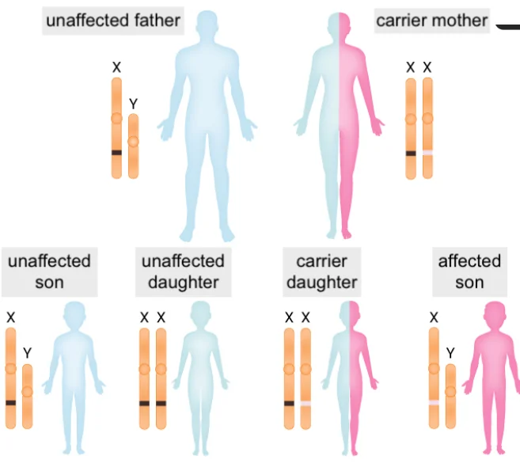
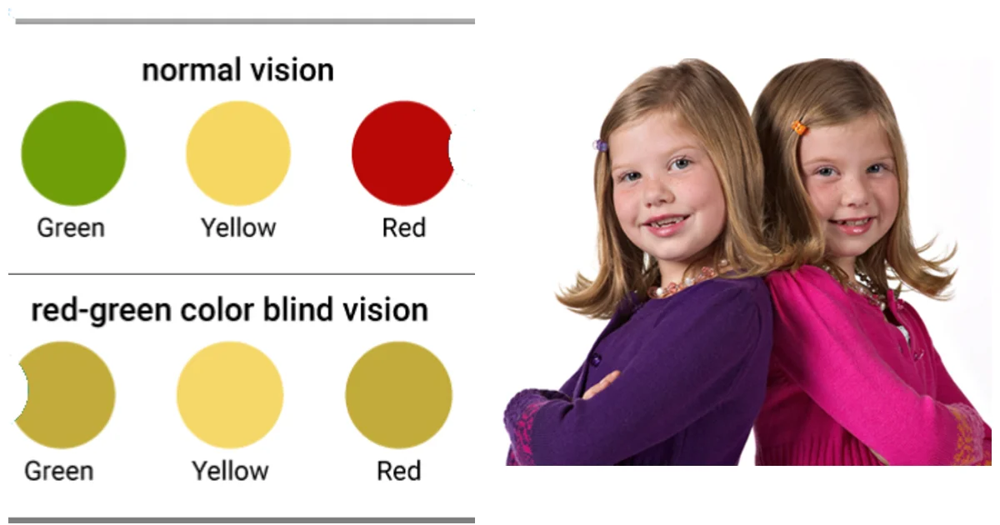
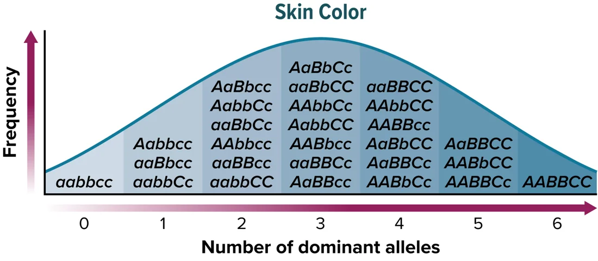
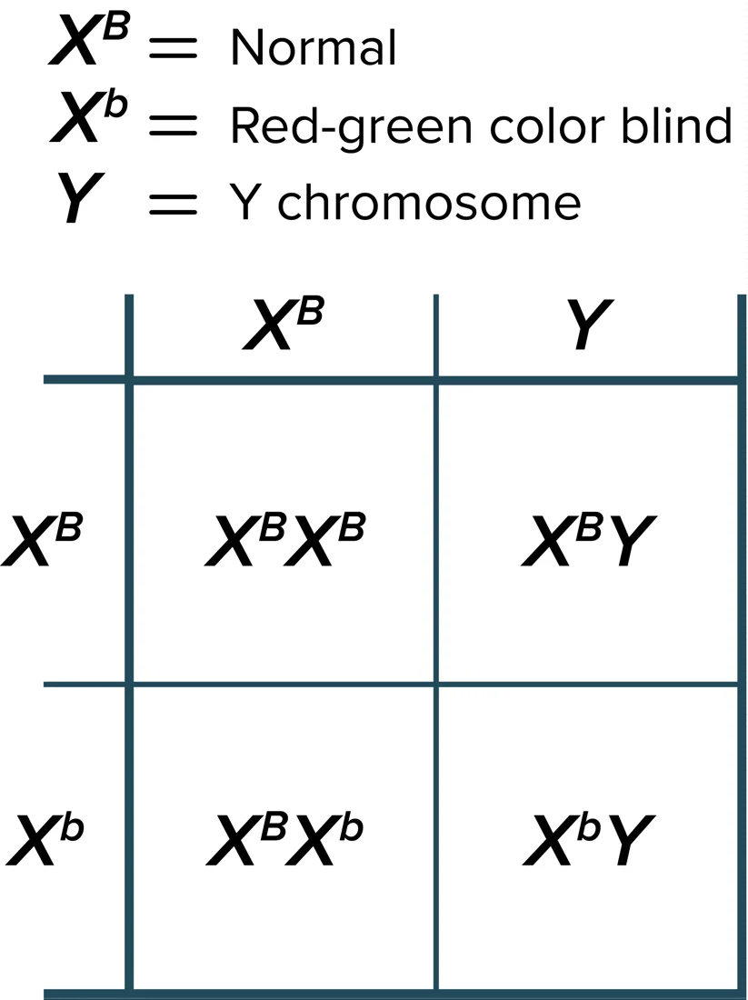
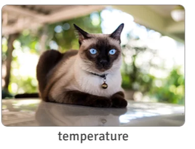
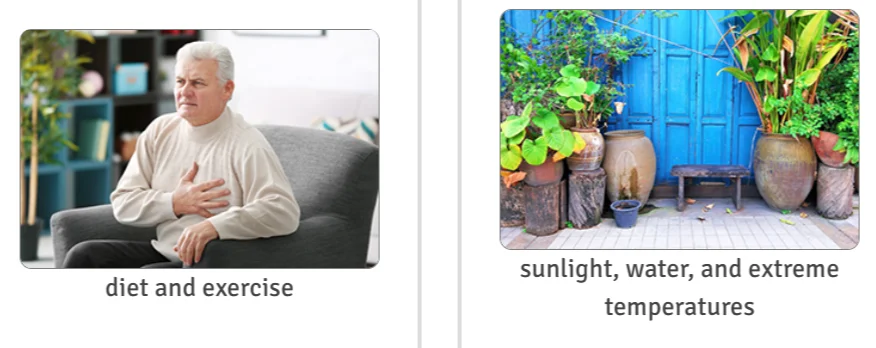
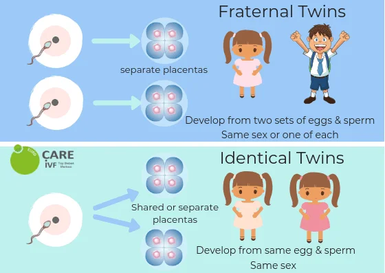
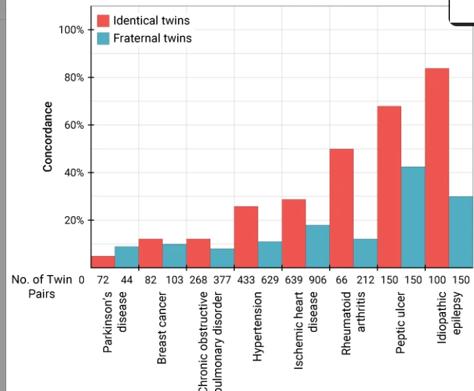

Sex-Linked and Polygenic Traits
Colour blindness · haemophilia · environment · twin studies
 UAE NATIONAL CHARTER · الميثاق الوطني
UAE NATIONAL CHARTER · الميثاق الوطنيMeet your UAE Values Team
Five friends will coach you through today's genes-and-environment mission. Tap a character to discover their job today!
Lesson map · 45 minutes · tap any activity
Objectives, success criteria & key words
Describe sex-linked and polygenic traits, and how the environment affects traits.
- Foundation: I can explain why X-linked recessive traits are more common in males and name two examples.
- Secure: I can solve X-linked Punnett squares and describe polygenic traits and the bell curve.
- Advanced: I can use twin concordance rates to judge whether a trait is mainly genetic or environmental.
Starter + attendance on the LMS

- Take attendance on the LMS (Almanhal) and settle in your seat.
- Recap: females are XX and males are XY. Which sex has a Barr body, and why?
- Look at the family: the mother is a carrier. Which child is affected, a son or a daughter?
- Then answer the true/false questions on the next slide on your own.
Pre-assessment: what do you already know?

Hook: boys, girls and twins
Two mysteries…
1. In a school of 600 boys and 600 girls, about 50 boys but only about 3 girls are red-green colour blind.
2. Identical twin sisters have exactly the same DNA, but one is taller and one has asthma. How?
2. Is height controlled by one gene or many?
3. What could be different in the twins' lives (diet, sport, environment)?
Video: sex-linked & polygenic traits (narrated, 2 min 16 s, subtitles)
Activity 1: sex-linked or polygenic?
Does each feature describe a Sex-linked trait or a Polygenic trait? Tap to choose, then check.

Activity 2: the spare tyre and the dimmer switches (the unconventional version)
Sex-linked = a spare tyre. A female has two X "tyres": if one is faulty (Xb), the spare keeps her going, so she is a carrier. A male has only one X tyre and no spare: one faulty tyre and he shows the trait.
Polygenic = dimmer switches. Height is like a room lit by many dimmer switches (genes). Each adds a little light, so you get every shade from dim to bright: a bell curve. Opening the curtains (diet, sunlight) is the environment.
Sex-linked traits are carried on the X and Y chromosomes; most are X-linked. X-linked traits are more common in males, because a recessive allele on their only X is expressed. Polygenic traits arise from the interaction of multiple pairs of genes and often show a bell-shaped distribution. Twin studies help scientists separate genetic contributions from environmental contributions.
Textbook: red-green colour blindness and haemophilia

Red-green colour blindness is a recessive X-linked trait: XB = normal vision, Xb = colour blind. Mothers are carriers. Females can be colour blind, but only if they inherit the recessive allele from both parents. Haemophilia is a recessive X-linked trait that causes delayed clotting of blood; a famous pedigree involves the family of Queen Victoria.
Textbook: polygenic traits and the environment
Polygenic traits are controlled by more than one gene: eye colour, skin colour, fingerprint pattern and height. They show a wide variation and a bell-shaped distribution, with few at the extremes and most in the middle. Environmental factors also affect how traits are expressed.


Textbook: identical and fraternal twins

Identical twins are genetically identical. If a trait is expressed in one twin but not the other, the effect is likely due to the environment; if it is expressed in both, it is likely controlled by genetics. The percentage of twins who both express a trait is the concordance rate. Fraternal twins are genetically different and are used as a control.
Simulation: X-linked Punnett square
Simulation: from one gene to a bell curve
Each gene has a dominant allele that adds one "unit" of the trait (like A, B, C for skin colour). Slide to add more genes and watch the distribution in a population of 1000 people. Then switch on the environment.
Simulation: twin study explorer · concordance rates

Which trait shows little to no genetic influence? Which shows a strong genetic influence?
Lab: hand-span survey · is it a bell curve?
- Spread your hand; measure from thumb tip to little-finger tip (cm).
- Add a tally mark to the class chart in 1 cm groups (e.g. 17–17.9 cm).
- Plot the class results as a bar chart. Describe its shape.
| Question | Your answer | Question | Your answer |
|---|---|---|---|
| My hand span | about 17–22 cm | Most common group | a middle group |
| Shape of graph | bell-shaped | One gene or many? | many: polygenic |
| Continuous or discrete? | continuous | One environmental factor | diet / nutrition |
Formative check
Tap an answer. Wrong? Read the hint and try again!
Put the steps of a twin study in order
Tap the steps from first to last. Tap a numbered one to undo.
Sex-linked and polygenic worksheet (1/2)
B. Carrier female
C. Normal male
D. Colour-blind female
E. Normal (non-carrier) female
Sex-linked and polygenic worksheet (2/2)
| Example | Mainly… |
|---|---|
| red-green colour blindness | |
| dark paws on a Siamese cat | |
| a plant dropping its leaves in a drought | |
| human height | |
| blood type (100% concordance in identical twins) | |
| heart disease (inherited, but affected by diet) |
Haemophilia is X-linked recessive. A normal father (XHY) and a carrier mother (XHXh) have children. Explain the risk for sons and daughters.
✓ Punnett square: XHXH, XHXh, XHY, XhY.
✓ Sons: 1/2 (50%) have haemophilia (XhY), because they get their only X from the mother.
✓ Daughters: none affected; 1/2 are carriers, because they also get the father's XH.
Main activity: choose your level · Green · Blue · Orange
Green · Mandatory ★
- Why are X-linked recessive traits more common in males?
- Name three human polygenic traits.
1. Males have one X: a single recessive allele is expressed (no second X to hide it).
2. Height, skin colour, eye colour (fingerprint pattern).
Blue · Less mandatory ★★
- Colour-blind father (XbY) × normal non-carrier mother (XBXB): what are the children?
- Why is human height not a perfect bell curve of genes alone?
1. All daughters are carriers (XBXb); all sons are normal (XBY).
2. The environment (diet, health, exercise) also affects height.
Orange · Optional ★★★
- Identical twins 70%, fraternal 10% for rheumatoid arthritis. What do you conclude?
- Why did Queen Victoria's sons, not daughters, have haemophilia?
1. A big gap (60%): strong genetic influence; not 100%, so the environment also plays a part.
2. She was a carrier (XHXh). Sons get one X from her: 50% chance of XhY. Daughters also got the father's XH, so they were carriers.
Summative assessment: Inheritance Master quiz
Plenary: both mysteries solved!
1. Boys and colour blindness: the colour-vision gene is on the X. Boys have only one X, so one recessive allele (XbY) makes them colour blind. Girls need two (XbXb), which is much rarer, so most are only carriers.
2. Different identical twins: height is polygenic and also shaped by the environment (diet, sport, illness). Twin studies use concordance rates to separate genes from environment.
Foundation: I can explain why X-linked traits are more common in males.
Secure: I can solve X-linked crosses and describe the bell curve.
Advanced: I can use concordance rates to judge genes vs environment.
I can explain how the environment changes phenotype.
Which value did you show today?
Tap the character whose value you showed in this lesson. Then tell your partner one real example!
Your genes, your choices
Your genes give you a starting point, but your choices, effort and environment shape who you become. Even identical twins write their own stories. Write yours with excellence!